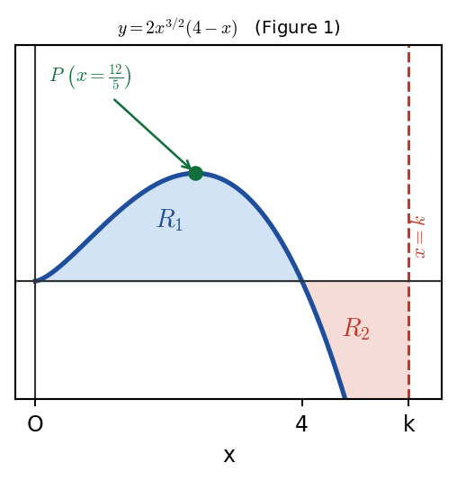

Harry → Phuc • 10 July 2026 tutorial
P2 WMA12/01 — May 2024 — Q9Q9 · Stationary point and equal areas by calculus

Figure 1: curve \(y=2x^{3/2}(4-x)\). \(R_{1}\) is the area above the x-axis (\(0<x<4\)); \(R_{2}\) is the area below the x-axis (\(4<x<k\)). Equal areas: \(\text{Area}(R_{1})=\text{Area}(R_{2})\).
Part (a) · \(x\)-coordinate of stationary point \(P\)[4] · worked in lesson
Hide workingStrategy
Expand \(y=2x^{3/2}(4-x)\) as a sum of two terms, differentiate using the power rule, set \(\frac{dy}{dx}=0\) and solve for \(x\).
Working · expand
\[ y=2x^{3/2}(4-x)=8x^{3/2}-2x^{5/2} \]
Working · differentiate
\[ \frac{dy}{dx}=8\cdot\frac{3}{2}x^{1/2}-2\cdot\frac{5}{2}x^{3/2}=12x^{1/2}-5x^{3/2} \]
Working · set \(=0\) and factor
\[ 12x^{1/2}-5x^{3/2}=0 \;\Rightarrow\; x^{1/2}(12-5x)=0 \]\(x=0\) (the x-intercept, not a stationary point) or \(x=\tfrac{12}{5}\).
Result
\( x=\frac{12}{5} \)
Sense check
Only the \(x\)-coordinate is asked for (not the coordinates of \(P\)). \(x=0\) is the intercept, not \(P\).
Phuc's work (recorded): Phuc differentiated correctly, found \(x=\tfrac{12}{5}\), and discarded \(x=0\). Harry confirmed only the \(x\)-coordinate is required here.
Part (b) · Exact value of \(k\) (equal areas)[4] · worked in lesson
Carry-in\(y=8x^{3/2}-2x^{5/2}\); curve meets axis at \(x=0\) and \(x=4\). \(R_{1}\) is above axis (\(0\to4\)), \(R_{2}\) is below (\(4\to k\)).
Hide workingStrategy
Integrate \(y=8x^{3/2}-2x^{5/2}\) to get \(\tfrac{16}{5}x^{5/2}-\tfrac{4}{7}x^{7/2}\). Set \(\text{Area}(R_{1})=-\text{Area}(R_{2})\) (the leading minus for the below-axis area), simplify, and solve for \(k\).
Working · integrate
\[ \int\big(8x^{3/2}-2x^{5/2}\big)\,dx=\frac{16}{5}x^{5/2}-\frac{4}{7}x^{7/2} \]
Working · set up the equal-areas equation
\[ \int_{0}^{4}\!\big(8x^{3/2}-2x^{5/2}\big)\,dx=-\int_{4}^{k}\!\big(8x^{3/2}-2x^{5/2}\big)\,dx \]
Working · the shared piece cancels
Let \(F(x)=\tfrac{16}{5}x^{5/2}-\tfrac{4}{7}x^{7/2}\). Then \(F(4)-F(0)=-(F(k)-F(4))\), so \(F(4)=-F(k)+F(4)\), giving \(F(k)=0\):\[ \frac{16}{5}k^{5/2}-\frac{4}{7}k^{7/2}=0 \]
Working · factor and solve
\[ k^{5/2}\left(\frac{16}{5}-\frac{4}{7}k\right)=0 \;\Rightarrow\; k=0 \text{ or } \frac{16}{5}-\frac{4}{7}k=0 \]\[ k=\frac{16}{5}\times\frac{7}{4}=\frac{28}{5} \]
Working · reject \(k=0\)
From the diagram, \(k>4\) (\(R_{2}\) is to the right of the intercept at \(x=4\)). So reject \(k=0\).
Result
\( k=\frac{28}{5}=5.6 \)
Sense check
\(\tfrac{28}{5}=5.6>4\) ✓. The exact value is required (no decimals).
Phuc's slips (recorded): Phuc slipped on integrating \(x^{5/2}\): the correct term is \(\tfrac{4}{7}x^{7/2}\) (raise the power then divide by the new power). Harry: "integration treats areas above the axis as positive, and below as negative" — use a leading minus sign, not a modulus.
Source-limited Gemini video reconstruction (uncertain): the reconstruction suggests \(k\) may have been written in place of \(x\) inside the \(R_{2}\) integrand. Treat this only as a diagnostic reminder: \(x\) stays the variable of integration and \(k\) is the upper limit; this exact Phuc/Harry exchange is not independently established by the available lesson evidence.
Exam tip (Harry): Avoid using moduli for negative areas; use a leading minus sign outside the integral instead.